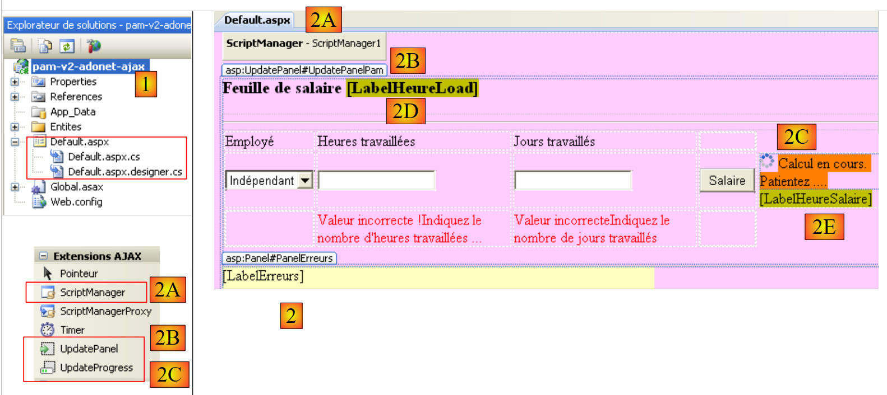

5. La aplicación [SimuPaie] – versión 2 – AJAX / ASP.NET
5.1. Introducción
La tecnología AJAX (Asynchronous JavaScript and XML) combina un conjunto de tecnologías:
- JavaScript: una página HTML mostrada en un navegador puede incorporar código JavaScript. Este código es ejecutado por el navegador si el usuario no ha desactivado la ejecución de JavaScript en su navegador. Esta tecnología existe desde los inicios de la web y ha experimentado un resurgimiento de interés desde 2005 gracias a AJAX.
- DOM: Modelo de objetos del documento. El código JavaScript incrustado en una página HTML tiene acceso al documento en forma de árbol de objetos, el DOM. Cada elemento del documento (un campo de entrada, una etiqueta div con nombre, una etiqueta select, etc.) está representado por un nodo en el árbol. El código JavaScript puede cambiar el documento mostrado modificando el DOM. Por ejemplo, puede cambiar el texto que se muestra en un campo de entrada a través del nodo DOM que representa ese campo.
AJAX utiliza JavaScript para realizar intercambios entre el navegador y el servidor en segundo plano. Para responder a un evento, como el clic en un botón, el navegador ejecuta código JavaScript para enviar una solicitud HTTP al servidor. Esta solicitud contiene parámetros que indican al servidor qué debe hacer. A continuación, el servidor ejecuta la acción solicitada. En respuesta, envía al navegador un flujo HTTP que contiene datos que permiten una actualización parcial de la página que se muestra actualmente. Esto se lleva a cabo a través del DOM del documento y la ejecución del código JavaScript incrustado en el documento. Los datos devueltos por el servidor pueden estar en varios formatos: XML, HTML, JSON, texto sin formato, etc.
La ventaja de esta tecnología radica en esta actualización parcial del documento mostrado. Esto significa:
- menos datos intercambiados entre el cliente y el servidor, lo que se traduce en una respuesta más rápida
- una interfaz gráfica más fluida, ya que las acciones del usuario no provocan una recarga completa de la página.
En una intranet donde el tráfico de red es rápido, AJAX permite crear aplicaciones web que se comportan de forma similar a las interfaces tradicionales de Windows. Es posible gestionar eventos como un cambio de selección en una lista y actualizar la página de forma inmediata y parcial para reflejar ese cambio. El hecho de que la página no se recargue por completo proporciona al usuario la misma sensación de fluidez que experimenta con las aplicaciones de Windows. En el caso de las aplicaciones web, donde los tiempos de respuesta pueden ser largos, la tecnología AJAX sigue siendo útil, pero la fluidez percibida depende del rendimiento de la red.
El principal reto de AJAX es el lenguaje JavaScript. Creado en los primeros días de la web,
- resulta poco práctico para la programación orientada a objetos. Por ejemplo, no es un lenguaje tipado. No se declara el tipo de los datos que se manipulan. En este sentido, es similar a lenguajes como Perl o PHP.
- No existe un estándar aceptado por todos los navegadores. Cada navegador tiene sus propias extensiones de JavaScript, lo que significa que el código JavaScript escrito para Internet Explorer puede no funcionar en Mozilla Firefox, y viceversa.
- Es difícil de depurar, ya que los navegadores no ofrecen herramientas potentes para depurar el código JavaScript que ejecutan.
Todas estas deficiencias de JavaScript hicieron que se utilizara muy poco antes de la llegada de AJAX. Una vez que se comprendió el valor de ejecutar código JavaScript en segundo plano —para realizar solicitudes HTTP al servidor web y utilizar su respuesta para llevar a cabo, a través del DOM, una actualización parcial del documento mostrado—, los equipos de desarrollo se pusieron manos a la obra y propusieron marcos que permiten utilizar AJAX sin que el desarrollador tenga que escribir código JavaScript. Para lograrlo, se desarrollaron bibliotecas de JavaScript capaces de adaptarse al navegador del cliente. La inserción de código JavaScript en la página HTML enviada al navegador se realiza en el lado del servidor, utilizando técnicas que varían en función del marco de trabajo AJAX utilizado. Hay marcos de trabajo AJAX disponibles para Java, .NET, PHP, Ruby y otros. AJAX está integrado en Visual Web Developer 2008.
5.2. El proyecto de Visual Web Developer en la capa [ web-ui-ajax]
La nueva versión se crea duplicando la versión anterior. Solo se modificará la página [Default.aspx].
 |
- En [1], utilizando el Explorador de Windows, duplique la carpeta del proyecto [pam-v1-adonet] y cámbiele el nombre a [pam-v2-adonet-ajax]. A continuación, utilizando Visual Web Developer, abra el proyecto (Archivo / Abrir proyecto) desde esta nueva carpeta [2]
- En [3], cámbiale el nombre
 |
- En las propiedades del nuevo proyecto, cambia el nombre del ensamblado [4] y el espacio de nombres predeterminado [5].
Una vez hecho esto, sustituya el espacio de nombres [pam_v1] por el espacio de nombres [pam_v2] en los archivos [Default.aspx, Default.aspx.cs, Default.aspx.designer.cs, Global.asax, Global.asax.cs] para garantizar la coherencia con el espacio de nombres predeterminado. Por ejemplo, [Default.aspx] [6] pasa a ser:
<%@ Page Language="C#" AutoEventWireup="true" CodeBehind="Default.aspx.cs" Inherits="pam_v2._Default" %>
...
La página [ Default.aspx] se modificará de la siguiente manera:
 |
- Incorporación de componentes Ajax al formulario [Default.aspx] (véase [2] más arriba).
- 2A: El componente <asp:ScriptManager> es necesario para cualquier proyecto AJAX
- 2B: El componente <asp:UpdatePanel> se utiliza para definir el área que se actualizará cuando el usuario envíe una solicitud POST. Este componente evita que se recargue toda la página.
- 2C: El componente <asp:UpdateProgress> se utiliza para mostrar texto o una imagen durante la actualización con el fin de notificar al usuario, tal y como se muestra a continuación:
 |
- (continuación)
- 2D: Un control Label denominado LabelHeureLoad que mostrará la hora en la que se ejecuta el controlador de eventos Load de la página.
- 2E: Un control Label llamado LabelHeureSalaire que mostrará la hora en la que se ejecuta el controlador de eventos Click del botón [Salaire]. Queremos demostrar que Ajax no recarga toda la página cuando se hace clic en el botón [Salaire]. Esto se muestra en la captura de pantalla anterior, donde se pueden ver dos horas diferentes en los dos controles Label.
La anterior «ajaxificación» del formulario se puede realizar directamente en el código fuente de [Default.aspx] añadiendo etiquetas de extensión Ajax:
...
<body style="text-align: left" bgcolor="#ffccff">
<h3>
Feuille de salaire
<asp:Label ID="LabelHeureLoad" runat="server" BackColor="#C0C000"></asp:Label></h3>
<hr />
<form id="form1" runat="server">
<asp:ScriptManager ID="ScriptManager1" runat="server" EnablePartialRendering="true" />
<asp:UpdatePanel runat="server" ID="UpdatePanelPam" UpdateMode="Conditional">
<ContentTemplate>
<div>
<table>
<tr>
...
<tr>
<td>
<asp:DropDownList ID="ComboBoxEmployes" runat="server">
</asp:DropDownList></td>
<td>
<asp:TextBox ID="TextBoxHeures" runat="server" EnableViewState="False">
</asp:TextBox></td>
<td>
<asp:TextBox ID="TextBoxJours" runat="server" EnableViewState="False">
</asp:TextBox></td>
<td>
<asp:Button ID="ButtonSalaire" runat="server" Text="Salaire" CausesValidation="False" /></td>
<td> <asp:UpdateProgress ID="UpdateProgress1" runat="server">
<ProgressTemplate>
<img src="images/indicator.gif" />
<asp:Label ID="Label5" runat="server" BackColor="#FF8000" EnableViewState="False"
Text="Calcul en cours. Patientez ...."></asp:Label>
</ProgressTemplate>
</asp:UpdateProgress>
<asp:Label ID="LabelHeureSalaire" runat="server" BackColor="#C0C000"></asp:Label></td>
</tr>
<tr>
...
</tr>
</table>
</div>
<br />
....
<table>
<tr>
<td>
Salaire net à payer :
</td>
<td align="center" bgcolor="#C0C000" height="20px">
<asp:Label ID="LabelSN" runat="server" EnableViewState="False"></asp:Label></td>
</tr>
</table>
</asp:Panel>
</ContentTemplate>
</asp:UpdatePanel>
</form>
</body>
</html>
- Línea 8: Cualquier formulario habilitado para Ajax debe incluir la etiqueta <asp:ScriptManager>. Esta etiqueta permite el uso de nuevos componentes Ajax:
 |
- La etiqueta <asp:ScriptManager> se puede añadir haciendo doble clic en el componente [ScriptManager] anterior. Asegúrese de comprobar que esta etiqueta se encuentra dentro de la etiqueta <form> en el código fuente. El atributo [EnablePartialRendering="true"] de la línea 8 está ausente por defecto. Dado que «true» es su valor por defecto, no es estrictamente necesario.
- Línea 9: La etiqueta <asp:UpdatePanel> se utiliza para delimitar las áreas de la página que deben actualizarse durante una actualización parcial de la página. El atributo [UpdateMode="Conditional"] indica que el área solo debe actualizarse en respuesta a un evento AJAX procedente de un componente dentro de dicha área. El otro valor es [UpdateMode="Always"], que es el valor predeterminado. Con este atributo, el área UpdatePanel se actualiza sistemáticamente incluso si el evento AJAX que se produjo se originó en un componente de otra área UpdatePanel. Por lo general, este comportamiento no es deseable.
La etiqueta <asp:UpdatePanel> admite dos etiquetas secundarias: <ContentTemplate> y <Triggers>.
- Las etiquetas <asp:ContentTemplate> de las líneas 10 y 53 definen el área de la página que se actualizará parcialmente.
- Líneas 27-33: Un componente Ajax <asp:UpdateProgress> que muestra texto durante todo el proceso de actualización de la página. Por ejemplo, al hacer clic en el botón [Salario] se desencadena una solicitud POST en segundo plano. El navegador no muestra el icono del reloj de arena, por lo que el usuario podría verse tentado a seguir utilizando el formulario. La etiqueta <asp:UpdateProgress> muestra un texto que indica que la página se está actualizando. También se puede mostrar una imagen. Aquí se muestran una imagen animada (línea 29) y texto (líneas 30-31):
 |
- líneas 28-32: la etiqueta <ProgressTemplate> delimita el contenido que se mostrará mientras dure la actualización del UpdatePanel en el que se encuentra la etiqueta UpdateProgress.
- líneas 29-31: la imagen animada y el texto que se mostrarán durante la actualización del UpdatePanel.
- línea 5: la etiqueta LabelHeureLoad se coloca fuera del área habilitada para AJAX
- línea 34: la etiqueta LabelHeureSalaire se coloca dentro del área habilitada para AJAX
El código de la página [ Default.aspx.cs] cambia de la siguiente manera:
protected void Page_Load(object sender, System.EventArgs e)
{
// time of each page load
LabelHeureLoad.Text = DateTime.Now.ToString("hh:mm:ss");
// initial request processing
if (!IsPostBack)
{
....
}
- Línea 4: Actualizar el tiempo de carga de la página
protected void ButtonSalaire_Click(object sender, System.EventArgs e)
{
// hourly wage calculation
LabelHeureSalaire.Text = DateTime.Now.ToString("hh:mm:ss");
// data verification
....
}
- línea 4: actualizar la hora de cálculo del salario
Para completar la página [Default.aspx], debemos incluir en ella la imagen animada a la que hace referencia la línea 4 del siguiente código fuente:
<td>
<asp:UpdateProgress ID="UpdateProgress1" runat="server">
<ProgressTemplate>
<img src="images/indicator.gif" />
<asp:Label ID="Label5" runat="server" BackColor="#FF8000" EnableViewState="False"
Text="Calcul en cours. Patientez ...."></asp:Label>
</ProgressTemplate>
</asp:UpdateProgress>
<asp:Label ID="LabelHeureSalaire" runat="server" BackColor="#C0C000"></asp:Label>
</td>
Con el Explorador de Windows, añadimos el archivo [images/indicator.gif] a la carpeta del proyecto [1]:
 |
- En [2], mostramos todos los archivos del proyecto
- En [3], seleccionamos la carpeta [images]
- En [4], incluimos la carpeta [images] en el proyecto
 |
- En [5], la carpeta [images] se ha incluido en el proyecto
- En [6], ocultamos los archivos que no forman parte del proyecto
- En [7], el nuevo proyecto
5.3. Probando la solución Ajax
Al ejecutar el proyecto (CTRL-F5), aparece la siguiente página:
 |
- en [1], el tiempo de carga de la página
Prueba la aplicación y comprueba que el botón [Salario] no provoque que la página se recargue por completo. Puedes comprobarlo comparando el tiempo que se muestra para procesar el clic en el botón [Salario] [2], que no es el mismo que el tiempo que tardó en cargarse la página inicialmente [3]:
 |
Repita las pruebas estableciendo la propiedad EnablePartialRendering del componente ScriptManager1 en False:
 |
Tenga en cuenta que ahora el comportamiento se asemeja al de una página que no utiliza AJAX. La página se recarga por completo al hacer clic en el botón [Salario]. Repita las pruebas utilizando un navegador diferente. El objetivo de las pruebas entre navegadores es demostrar que el JavaScript generado por los componentes de servidor ASP/AJAX se interpreta correctamente en los distintos navegadores.
Por último, destacaremos la función de la etiqueta <asp:UpdateProgress>. En el código del procedimiento [ButtonSalaire_Click] de [Default.aspx.cs], añade una instrucción que pause el procedimiento durante 3 segundos:
using System.Threading;
...
protected void ButtonSalaire_Click(object sender, System.EventArgs e)
{
// hourly wage calculation
LabelHeureSalaire.Text = DateTime.Now.ToString("hh:mm:ss");
// waiting
Thread.Sleep(3000);
// data verification
....
}
La línea 8 hace que el subproceso que ejecuta el procedimiento [ButtonSalaire_Click] espere 5 segundos. Una vez hecho esto, volvamos a ejecutar las pruebas (tras establecer la propiedad EnablePartialRendering del componente ScriptManager1 en True). Esta vez, vemos el texto de [UpdateProgress], así como la imagen animada, mientras se calcula el salario:

5.4. Conclusión
El estudio anterior nos ha mostrado que es posible añadir funcionalidad AJAX a aplicaciones ASP.NET existentes. Las extensiones ASP.NET AJAX van más allá de lo que acabamos de ver. Invitamos a los lectores a visitar el sitio web [http://ajax.asp.net].